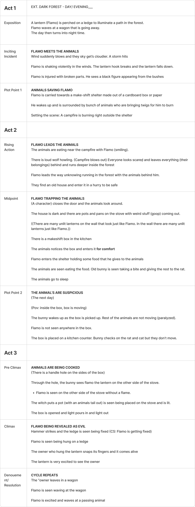
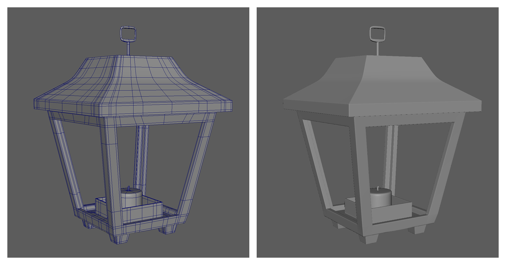
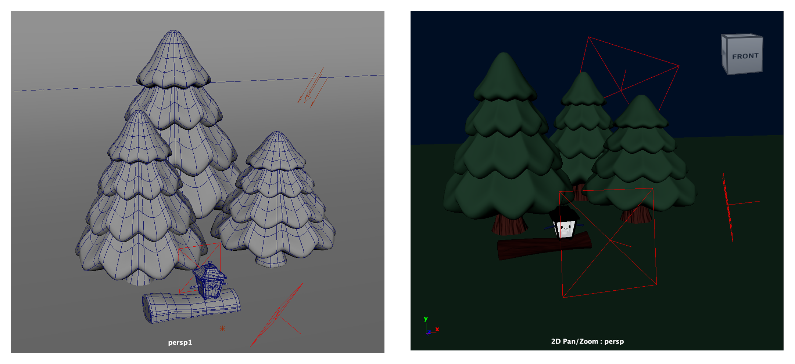
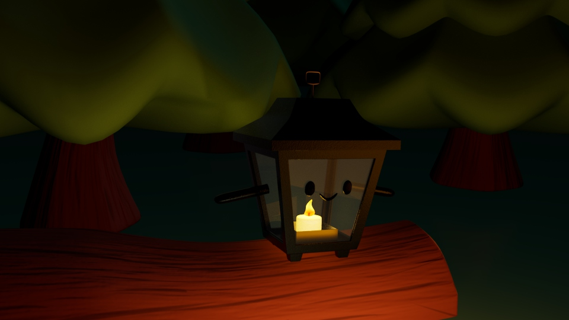
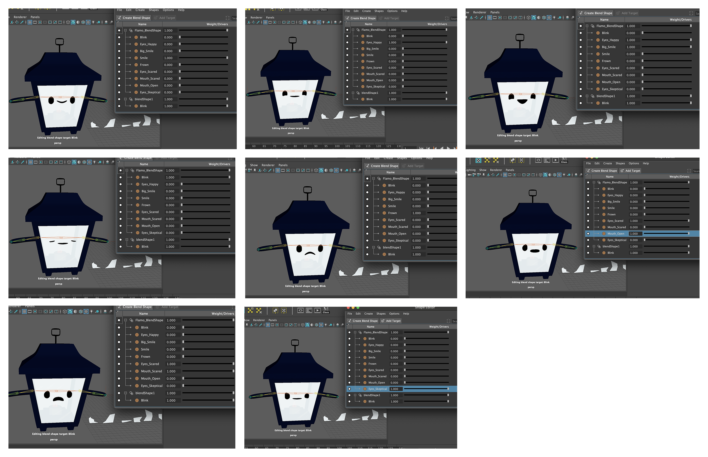
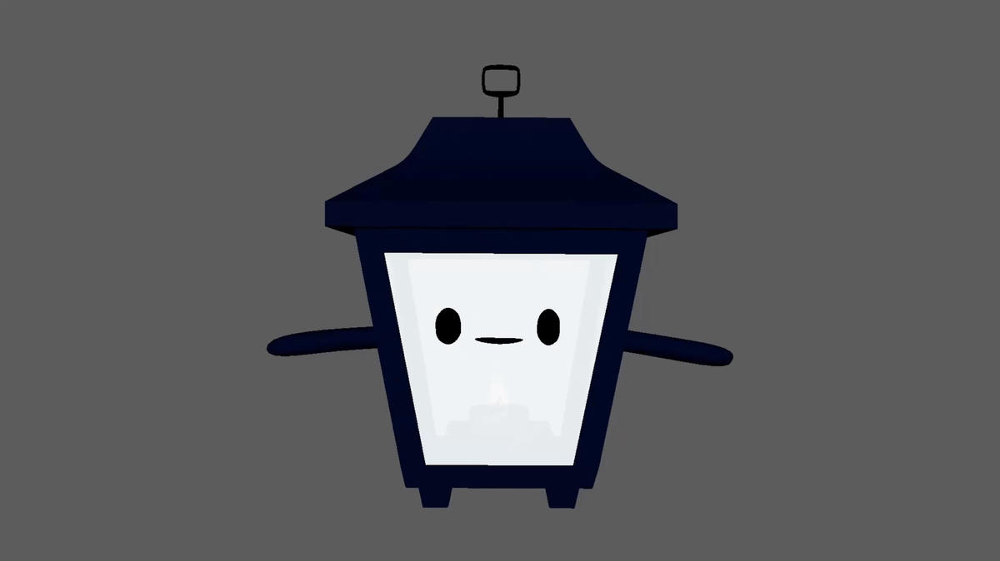
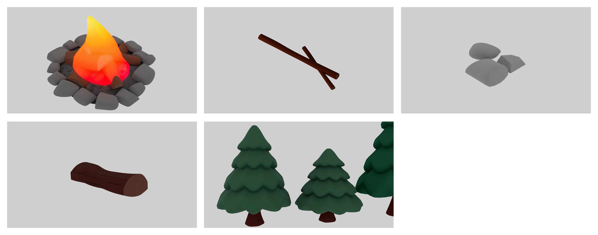
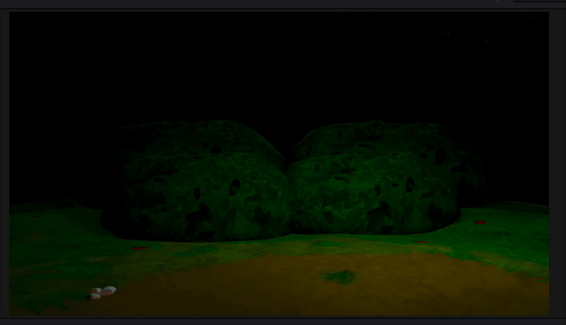
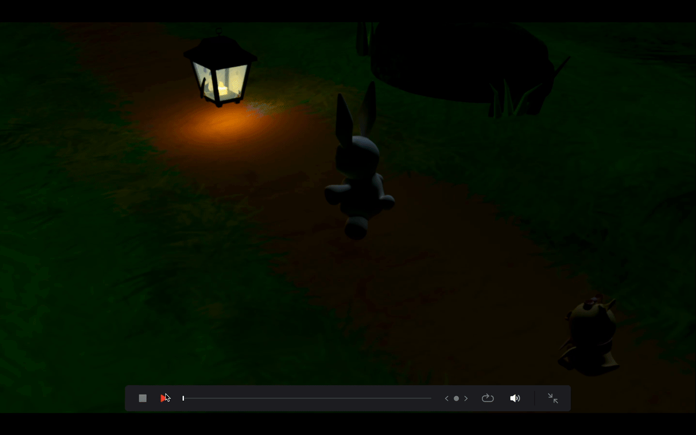

JC
JC

Currents of the Mind
Developing a VR journey about breaking free of self-doubt and rediscovering confidence and potential
Project Manager & Lead
Character Designer
Sound Designer
Modeller, Rigger, Animator
Sketching
Storyboarding
Rendering
Angela Lee
Abhishek Mishra
Leanne Ngong
Academic Project
4 Weeks
Sept. 2024 - Dec. 2024
Maya
Figma
Procreate
Krita
Davinci Resolve
A Flicker of Friendship is a short animation about a lonely lantern who forms an unexpected friendship with two animals in a dark forest.
PLANNING
I developed the concept of a lantern in a dark forest and fleshed out the narrative using the three-act structure as a base. I went over the story with my team to make sure everyone is on the same page.

Three-Act Structure Storyline
I created Flamo the lantern to look happy and innocent. I based his design on traditional medieval lanterns, as the world in the story has magic.
Colours: I used dark tones to represent his deeper, evil intentions.
Details: I added hands so he can interact with animals, and designed him with a metal body, glass coverings, and a candle inside with a metal frame to keep the wax from spilling.
For the animals, we wanted them to feel very cute and welcoming. Our first animal character is a white rabbit and our second is a chick.
PLANNING
3D MODELLING
I used the initial sketch of Flamo as a layout to work from. I created a base lantern model, focusing on maintaining proper topology and avoiding n-gons and poles.

Base Lantern Model
I created three versions of Flamo: a normal lantern, Flamo, and injured Flamo. I added arms and a face for Flamo. For injured Flamo, I added holes in the glass, and indents in the metal.
Since Flamo has cracks, I created glass shards to match the holes in injured Flamo.
3D MODELLING
We started texturing the characters. First, I UV-mapped Flamo, added a material and adjusted the settings accordingly. I then painted the colours, and applied bump maps for texture.
To achieve a cartoony look, we increased the roughness to make the characters less reflective.
3D MODELLING
To give an example of a scene, I modelled, UV, and textured trees and a log to create a scene with good composition, lighting and positioning.
For this image alone, I created Flamo the lantern in a forest, using the key light to simulate the glow of a campfire.

Wireframe & Lighting Set Up

Flamo Sitting on a Log in Front of a Campfire
3D MODELLING
I rigged Flamo by adding a skeleton with joints for the arms. I painted the skin weights, ensuring only the arms move while the rest of the body remains static without deformation.
I also checked and made small adjustments to the rigging of the other characters. For example, I made the chicks legs are easier to control and ensured certain areas are static. I added small details, such as making the end of the scarf move slightly when the left wing moves.
3D MODELLING
I used blend shapes in Maya to create different emotions for Flamo. I set up separate controls for the eyes and mouth so they could be adjusted individually or simultaneously to allow for more flexible reactions in the animation.

Various Flamo Emotions

Blendshapes Animation
3D MODELLING
I createdenvironmental elements by modeling, UV mapping, and texturing a campfire, logs, rocks, twigs, and trees.
For the fire itself, I added light attributes to make it glow and emulate a real campfire.

Site Map
ANIMATING & RENDERING
I animated Flamo’s walk cycle, as well as the candle flame and campfire behaviour. For the animatic, I animated Act 2: the rising action and midpoint (1:02-1:54).
ANIMATING & RENDERING

VFX Eye Example
For the final animation, I created Act 2 (Rising Action: 1:19-2:02), following the animatic as a guide and referring to the 12 principles of animation. I focused on character movement, blendshape expressions, and using the camera and lighting to convey the intended atmosphere. After, I rendered the final shots.
In post-production, I created a draft eye-opening animation in DaVinci Resolve for visual effects.

Lightning VFX
I added lightning effects to enhance the ominous mood of a house scene.
Through this project, I learned how to 3D model with proper topology and clean edge flow. I gained experience in UV mapping and texturing, creating clean UV layouts and understanding bump maps. I like the rigging process, including working with skin weights. I especially enjoyed creating facial expressions with blendshapes. Overall, I developed a stronger understanding of the full pipeline from modeling to animating and final rendering.
I would like to practice creating more 3D objects and characters. During the early stages of the project, our team wasn’t always aligned on the narrative, which made it difficult to reach a consensus. To address this, I suggested a meeting to review the storyline together and ensure everyone is on the same page. In the future, doing this earlier would improve our teamwork and save time.
Developing a VR journey about breaking free of self-doubt and rediscovering confidence and potential
Developing a game, following a young fish who discovers a mysterious legend that those who complete three trials can ascend into a dragon.